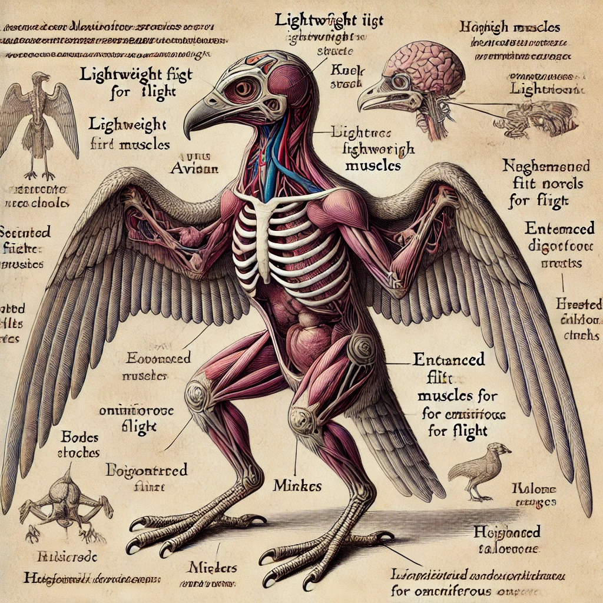
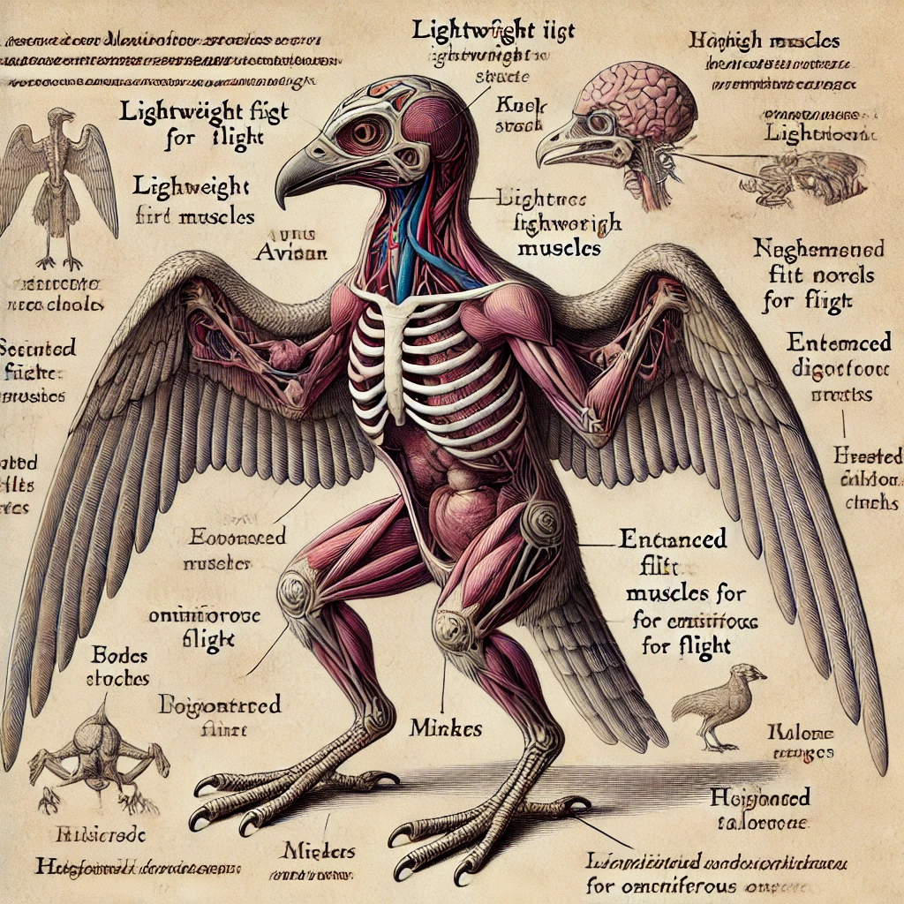

Humanos (Homo sapiens)

Resumo
- 206 ossos como nos humanos do mundo real.
- Ossos médios em densidade e espessura, conferindo boa mobilidade e resistência.
- Variações anatômicas são comuns devido à diversidade genética.
- Ossos do crânio moderadamente espessos, protegendo o cérebro de impactos leves.
Sistema Muscular
- Músculos proporcionais à estrutura esquelética.
- Boa capacidade de resistência e regeneração muscular.
- Alta plasticidade: humanos podem ganhar força, resistência ou velocidade com treinamento.
Sistemas Internos
- Respiratório: Pulmões bem desenvolvidos, permitem esforço moderado sem risco de exaustão rápida.
- Cardiovascular: Coração eficiente, mas propenso a doenças com envelhecimento.
- Digestivo: Sistema padrão, capaz de processar quase todos os tipos de alimentos.
- Nervoso: Equilíbrio entre reflexos e cognição.
Pontos Fortes e Fracos
Pontos Fortes:
- ✔️ Força, resistência e plasticidade muscular.
Pontos Fracos:
- ❌ Propensão a doenças com envelhecimento.
Detalhado
Parte 1: Superior (Cabeça e Pescoço)
- Crânio (1,4 kg) – Protege o cérebro.
- Mandíbula (0,3 kg) – Ossos maxilares sustentam os dentes e a mastigação.
- Vértebras cervicais (0,5 kg total) – 7 vértebras (C1 a C7) sustentam o pescoço.
Parte 2: Centro (Peito, Abdômen e Genitália)
- Costelas (4 kg total) – 12 pares protegem órgãos internos.
- Esterno (0,3 kg, 20 cm) – Protege o coração.
- Vértebras torácicas e lombares (1,2 kg total) – Sustentação do tronco.
- Bacia/Pelve (1,5 kg total) – Estrutura de suporte.
Parte 3: Auxiliares (Braços e Pernas)
- Úmero (0,3 kg, 35 cm) – Osso do braço.
- Rádio e Ulna (0,4 kg juntos, 25 cm) – Ossos do antebraço.
- Fêmur (0,7 kg, 50 cm) – Maior osso do corpo.
- Tíbia e Fíbula (0,6 kg juntas, 40 cm) – Ossos da perna.
- Mãos e Pés (1,3 kg total) – Mobilidade e destreza.
Anões (Homo Montanus)

Resumo
- Cerca de 230 ossos, devido a pequenas variações ósseas.
- Ossos extremamente densos, tornando-os quase inquebráveis.
- Crânio reforçado para suportar impactos diretos.
- Vértebras mais grossas e resistentes à compressão.
Sistema Muscular
- Músculos curtos e compactos, conferindo grande força para o tamanho.
- Alta resistência à fadiga muscular.
- Regeneração muscular mais lenta que a humana.
Sistemas Internos
- Respiratório: Pulmões adaptados para baixa oxigenação.
- Cardiovascular: Coração forte, batimentos mais lentos.
- Digestivo: Metabolismo lento.
- Nervoso: Reflexos mais lentos, mas boa coordenação.
Pontos Fortes e Fracos
Pontos Fortes:
- ✔️ Resistência física extrema.
- ✔️ Tolerância a toxinas.
Pontos Fracos:
- ❌ Menor mobilidade.
- ❌ Dificuldade para nadar.
Detalhado
Parte 1: Superior (Cabeça e Pescoço)
- Crânio (2 kg) – Mais espesso e resistente.
- Mandíbula (0,5 kg) – Ossos maxilares mais grossos.
- Vértebras cervicais (0,6 kg total) – 7 vértebras mais grossas.
Parte 2: Centro (Peito, Abdômen e Genitália)
- Costelas (6 kg total) – 14 pares.
- Esterno (0,5 kg, 22 cm) – Extremamente espesso.
- Vértebras torácicas e lombares (2 kg total) – Mais compactas.
- Bacia/Pelve (2,5 kg total) – Muito mais larga.
Parte 3: Auxiliares (Braços e Pernas)
- Úmero (0,5 kg, 30 cm) – Mais curto.
- Rádio e Ulna (0,6 kg juntos, 22 cm) – Extremamente grossos.
- Fêmur (1 kg, 40 cm) – Extremamente forte.
- Tíbia e Fíbula (0,8 kg juntas, 35 cm) – Resistentes.
- Mãos e Pés (1,5 kg total) – Pegada firme.
Elfos (Homo sylvanus)

Resumo
- Cerca de 190 ossos, alguns mais finos que os humanos.
- Ossos leves, porém flexíveis e resistentes a fraturas.
Sistema Muscular
- Músculos longos e fibrosos, favorecendo resistência e flexibilidade.
- Capacidade regenerativa superior.
Sistemas Internos
- Respiratório: Pulmões extremamente eficientes.
- Cardiovascular: Coração leve e eficiente.
- Digestivo: Dieta baseada em vegetais e carnes leves.
Pontos Fortes e Fracos
Pontos Fortes:
- ✔️ Mobilidade e reflexos.
Pontos Fracos:
- ❌ Baixa resistência a impactos.
Detalhado
Parte 1: Superior (Cabeça e Pescoço)
- Crânio (1,5 kg) – Levemente mais alongado.
- Mandíbula (0,4 kg) – Mais delgada e flexível.
Parte 2: Centro (Peito, Abdômen e Genitália)
- Costelas (5 kg total) – 12 pares, mais finas.
Parte 3: Auxiliares (Braços e Pernas)
- Úmero (0,4 kg, 32 cm) – Longo e delgado.
Meio-Orcs (Homo brutalis)

Resumo
- 220 ossos, mais espessos e densos.
Sistema Muscular
- Músculos densos, projetados para força bruta.
Sistemas Internos
- Respiratório: Pulmões amplos.
Pontos Fortes e Fracos
Pontos Fortes:
- ✔️ Força Bruta Inigualável.
Pontos Fracos:
- ❌ Baixa Mobilidade.
Detalhado
Parte 1: Superior (Cabeça e Pescoço)
- Crânio (2 kg, 23 cm) – Mais espesso e reforçado.
Parte 2: Centro (Peito, Abdômen e Genitália)
- Costelas (6 kg total) – 12 pares.
Parte 3: Auxiliares (Braços e Pernas)
- Úmero (0,6 kg, 35 cm) – Largo e denso.
Draconatos (Homo draconis)

Resumo
- 180 ossos, pesados e reforçados.
Sistema Muscular
- Músculos de alta densidade, projetados para força.
Sistemas Internos
- Respiratório: Pulmões resistentes.
Pontos Fortes e Fracos
Pontos Fortes:
- ✔️ Resistência Física Elevada – Ossos densos e musculatura reforçada tornam os draconatos altamente duráveis.
- ✔️ Capacidade de Sopro Elemental – Habilidade exclusiva que pode ser usada ofensivamente.
- ✔️ Regeneração Rápida – Metabolismo dracônico permite recuperação eficiente.
- ✔️ Resistência a Venenos e Gases – Pulmões e fígado altamente eficientes.
- ✔️ Visão Aprimorada – Capacidade de enxergar em condições adversas e detectar calor.
Pontos Fracos:
- ❌ Peso Elevado – Dificulta agilidade e velocidade de movimentação.
- ❌ Gasto Energético Alto – Exige alimentação constante para manter o metabolismo funcionando.
- ❌ Sopro Elemental Limitado – Pode ser usado poucas vezes antes de precisar de recuperação.
- ❌ Visão Menos Precisa em Ambientes Escuros Totais – Dependem de alguma fonte de luz ou calor para percepção.
- ❌ Dependência de Magia para Potencial Máximo – Algumas habilidades são melhores quando combinadas com manipulação mágica.
Detalhado
Parte 1: Superior (Cabeça e Pescoço)
- Crânio (2,8 kg, 30 cm de comprimento) – Alongado e reforçado, similar ao de um dragão jovem. Possui saliências ósseas para proteção.
- Mandíbula (1 kg, 18 cm de largura) – Extremamente forte, equipada com dentes afiados e molares resistentes para triturar carne e ossos.
- Vértebras cervicais (1,1 kg total) – Maior flexibilidade que a humana, permitindo maior movimentação da cabeça, útil para percepção de ameaças.
Parte 2: Centro (Peito, Abdômen e Genitália)
- Costelas (7 kg total) – 14 pares altamente resistentes, oferecendo proteção extra aos órgãos vitais.
- Esterno (1 kg, 30 cm) – Grosso e reforçado, resistente a impactos diretos.
- Vértebras torácicas e lombares (3 kg total) – Permitem estabilidade ao tronco, mesmo com grande musculatura.
- Bacia/Pelve (3,2 kg total) – Ampla e reforçada para sustentar musculatura volumosa.
Parte 3: Auxiliares (Braços e Pernas)
- Úmero (0,7 kg, 38 cm) – Espesso e resistente, permitindo golpes fortes.
- Rádio e Ulna (0,9 kg juntos, 30 cm) – Ossos robustos, resistentes a torções.
- Fêmur (1,5 kg, 48 cm) – Extremamente denso, capaz de suportar grandes impactos.
- Tíbia e Fíbula (1,1 kg juntas, 42 cm) – Adaptadas para suportar velocidade e força de impacto.
- Mãos e Pés (1,7 kg total) – Dedos terminam em garras curvadas, ótimas para escaladas e combate.
Tieflings

Resumo
- Alta resistência térmica.
- Baixa sensibilidade à dor devido à influência infernal.
- Sangue levemente cáustico, dificultando transfusões.
Pontos Fortes e Fracos
Pontos Fortes:
- ✔️ Resistência a Magia e Fogo – Pele e órgãos resistentes a altas temperaturas e manipulação mágica.
- ✔️ Sistema Imunológico Aprimorado – Tolerância elevada a venenos e substâncias tóxicas.
- ✔️ Visão no Escuro – Adaptados para enxergar sem fontes de luz.
- ✔️ Mobilidade e Reflexos Rápidos – Corpo leve e musculatura eficiente para esquivas e combate ágil.
- ✔️ Adaptação a Ambientes Hostis – Capacidade de sobreviver em atmosferas tóxicas ou corrompidas.
Pontos Fracos:
- ❌ Ossos Mais Leves – Embora resistentes, podem ser mais vulneráveis a impactos diretos pesados.
- ❌ Sensibilidade a Magia Sagrada – Alguns efeitos de magias divinas podem ser mais intensos.
- ❌ Necessidade de Energia Mágica – Tieflings sem exposição frequente a magia podem se sentir mais fracos.
- ❌ Pressão Arterial Elevada – Circulação rápida pode ser um problema em caso de hemorragia.
- ❌ Chifres e Cauda como Alvos – Embora úteis, podem ser agarrados ou usados contra eles em combate.
Detalhado
Parte 1: Superior (Cabeça e Pescoço)
- Crânio (2,5 kg, 28 cm de comprimento) – Similar ao humano, porém reforçado para suportar chifres.
- Mandíbula (900 g, 16 cm de largura) – Estrutura reforçada, permitindo mordidas mais fortes.
- Chifres (peso variável, 500 g a 2 kg cada, 20-45 cm de comprimento) – Feitos de queratina e osso, ocos na base para reduzir peso.
- Vértebras cervicais (1 kg total) – Adaptadas para sustentar o peso extra dos chifres sem comprometer a mobilidade.
Parte 2: Centro (Peito, Abdômen e Genitália)
- Costelas (6 kg total) – 12 pares, levemente flexíveis, permitindo resistência contra impactos sem quebrar facilmente.
- Esterno (800 g, 28 cm) – Composto por uma camada óssea densa para melhor proteção torácica.
- Vértebras torácicas e lombares (2,8 kg total) – Flexíveis, permitindo mais mobilidade para esquivas rápidas.
- Bacia/Pelve (2,9 kg total) – Adaptada para suportar músculos poderosos das pernas.
Parte 3: Auxiliares (Braços e Pernas)
- Úmero (0,6 kg, 36 cm) – Levemente alongado para maior alcance de golpes.
- Rádio e Ulna (0,8 kg juntos, 28 cm) – Resistentes contra impactos.
- Fêmur (1,4 kg, 46 cm) – Construído para velocidade e impulsão.
- Tíbia e Fíbula (1 kg juntas, 40 cm) – Adaptadas para saltos rápidos e pousos amortecidos.
- Mãos e Pés (1,6 kg total) – Podem apresentar garras curtas, úteis para escaladas e combate.
Outras Raças (Kenku, Tabaxi, etc.)
 

Raças aviárias e felinas possuem características únicas que as diferenciam das demais.
Resumo
- Raças aviárias (Kenku): Ossos ocos, tornando-os frágeis, mas leves e ágeis.
- Raças felinas (Tabaxi): Metabolismo rápido e alto índice de regeneração, com músculos ágeis e reflexos apurados.
Diagnóstico de Doenças
Identificação de Febres e Infecções
- Método medieval: Toque com as costas da mão na testa, axilas ou virilha.
- Medição mais precisa: Comparação com a própria temperatura corporal ou uso de pedras encantadas para indicar calor.
- Sinais graves: Pele extremamente quente, suor excessivo, tremores.
Análise de Urina
- Cor normal: Amarela clara.
- Muito escura: Desidratação ou problemas hepáticos.
- Esbranquiçada: Infecção.
- Vermelha: Sangramento interno ou doença renal.
- Cheiro muito forte: Infecção bacteriana ou desidratação severa.
Análise de Fezes
- Cor normal: Marrom.
- Muito clara: Problemas hepáticos.
- Preta e pegajosa: Sangramento interno no estômago.
- Com vermes visíveis: Parasitas intestinais.
Análise de Sangue
- Cor normal: Vermelho intenso.
- Muito escuro: Baixa oxigenação ou veneno.
- Muito claro: Possível anemia.
- Com manchas ou coágulos: Infecção ou doença.
Medindo Pressão Arterial
- Sinais de pressão alta: Veias saltadas, tontura, pulsação forte.
- Sinais de pressão baixa: Pele pálida, visão escurecendo, fraqueza.
- Método medieval: Pressionar uma artéria no pulso ou pescoço e comparar com batimentos normais.
Tratamento de Ferimentos
Técnicas de Suturas
- Suturas básicas: Usando agulha e fio esterilizado em álcool ou fogo.
- Grampos metálicos: Para cortes profundos em pele resistente.
- Colagem com resina ou mel: Alternativa para cortes pequenos.
Tratamento de Hemorragias
- Compressão direta.
- Cauterização (caso extremo).
- Uso de ervas hemostáticas como a raiz de selim.
Imobilização de Fraturas
- Talas de madeira amarradas com tiras de couro.
- Uso de magia de cura para acelerar o processo.
Cirurgias
Abertura do Abdômen
- Usado para tratar apendicite, retirada de flechas internas ou feridas infectadas.
- Técnica: Fazer incisão, limpar a área e suturar com fios resistentes.
Trepanação (Abertura do Crânio)
- Usado para aliviar pressão craniana após traumas.
- Risco extremo de infecção.
Amputações
- Realizadas com lâminas muito afiadas.
- Torniquete deve ser aplicado para evitar perda excessiva de sangue.
- Cauterização imediata pode evitar infecção.
Curas Alternativas
Ervas Medicinais
- Raiz de Selim: Coagula sangue rapidamente.
- Folha de Kelnor: Anestesia leve.
- Semente de Moonleaf: Reduz febres.
Poções e Alquimia
- Poção de Cura: Mistura de ervas regenerativas e líquidos encantados.
- Elixir de Resistência: Aumenta a imunidade temporariamente.
- Óleo de Ferro: Aplicado sobre feridas para reduzir infecção.
Medicina Divina e Arcana
- Magia de Cura / Palavra Curativa: Ajuda no fechamento de feridas e restauração de tecidos.
- Bom Fruto: Fonte de nutrientes e cura considerável quanto mais frutos ingerir.
Ferramentas Médicas
- Bisturis de osso ou ferro.
- Fios de tendões ou fibras vegetais.
- Lâminas de corte para amputação.
- Pinças de ferro para remover objetos do corpo.
- Ervas anestésicas e sedativas.